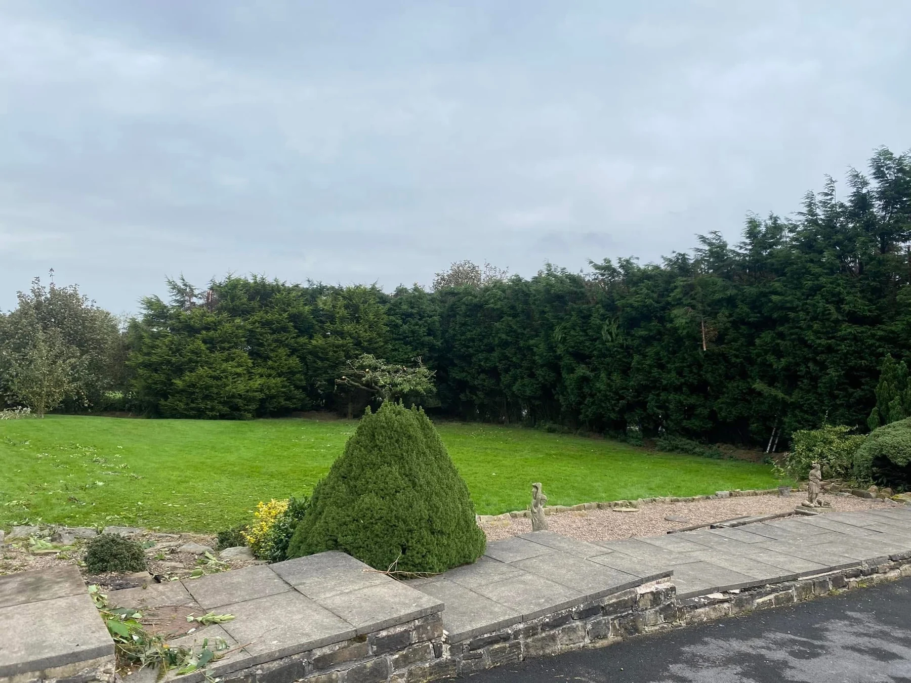
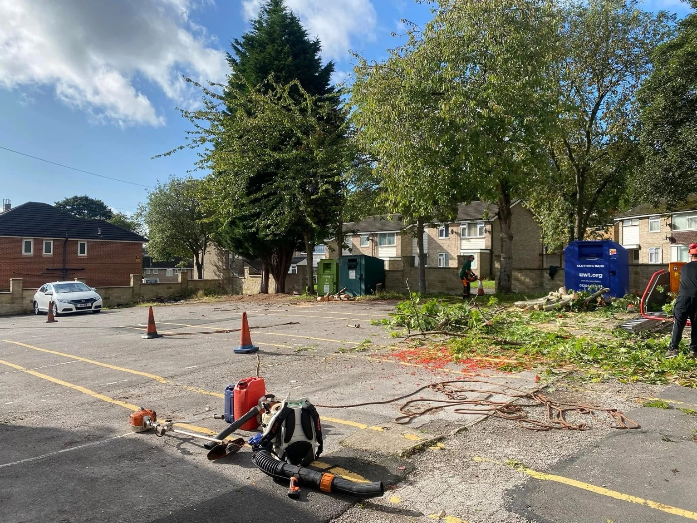
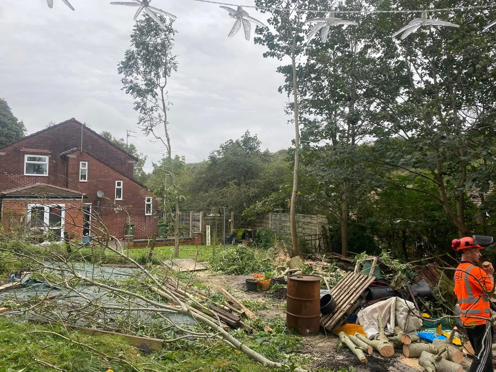

Tree workCutting, branches & clearance

Hedge careTrimming & shaping
Garden clearanceOvergrowth & outdoor spaces
LandscapingGardens, lawns & borders
CARE FOR THE SPACE OUTSIDE
A clearer outlook.
SPC Tree & Landscaping Services Ltd is based in Rochdale. Tree cutting, hedge care, garden clearance and landscaping help shape the space around your property.
Explore the project photographs, then share your ideas, location and access details to discuss the work.
Tell us about your project →

TREE WORK IN PROGRESS
Space, opened up.
Different stages of the same car-park tree-work project show cut branches, equipment and the working area. These views give a closer look at the job as it progresses.
Explore tree work →RECENT PROJECTS
The work, up close.
Tree work, garden clearance and shaped green spaces. Tap a photo to see the complete image.
GARDEN CLEARANCE
A fresh starting point.
Three views of the same cleared garden show the space, boundary fencing and access from the house. Talk to SPC about clearing your own outdoor area and what you want to do next.
Garden clearance →SPC · ROCHDALE
Shape your space.
From trees and hedges to a garden that needs a new start, explain what you want to improve. Photographs and a few details help SPC understand the site before discussing a quote.
01
Tree work
Discuss the trees, branches and the space around them.
02
Hedges & gardens
Share the size, condition and finish you have in mind.
03
A clear brief
Send your postcode, photos and any access information.
REQUEST A QUOTE
What’s the plan?
Choose a service and tell us about the job. The form opens WhatsApp with your details ready to send. You can add photos there.
SPC is based in Rochdale. Include your postcode so coverage and access can be discussed.
Call 07719 507808
cookemurphy26@gmail.com
Your details are only shared when you send the message. Privacy information.
GOOD TO KNOW
A few answers.
Where are you based?
SPC is based in Rochdale. Send your postcode to discuss coverage and availability for your project.
What services can I enquire about?
Tree cutting, hedge care, garden clearance and landscaping. The project photos show garden tree work, branch clearance, trimmed hedges and cleared outdoor spaces.
What should I send for a quote?
Your postcode, photos, a description of the work and any access details. For a hedge or garden area, approximate dimensions are helpful.
Can you help with an overgrown garden?
Garden clearance is shown in the portfolio. Send an overview of the garden and explain what needs removing or retaining.
What access details are useful?
Include the access width, steps, nearby structures and where the trees or garden area sit within the property. Photos from more than one angle help explain the site.
Can you discuss hedges and trees together?
Yes. Include both in your enquiry and explain the overall result you want for the garden.
Can I send photos on WhatsApp?
Yes. The quote form prepares your message in WhatsApp, where you can add photographs before sending it. An overview and close-up views help explain the job.
SPC TREE & LANDSCAPING
Let’s talk outdoors.
Based in Rochdale. Send your postcode and project details.
cookemurphy26@gmail.com